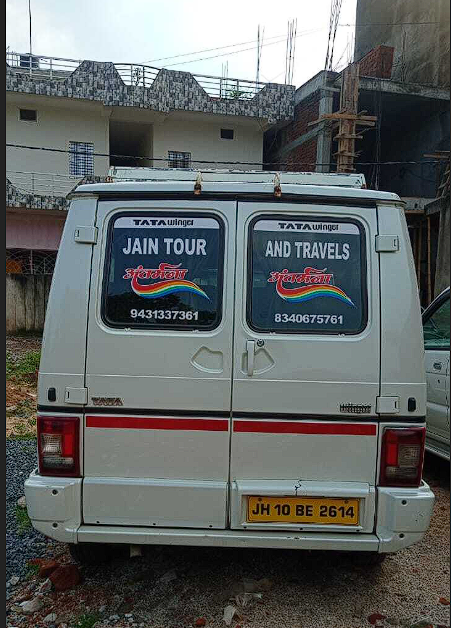
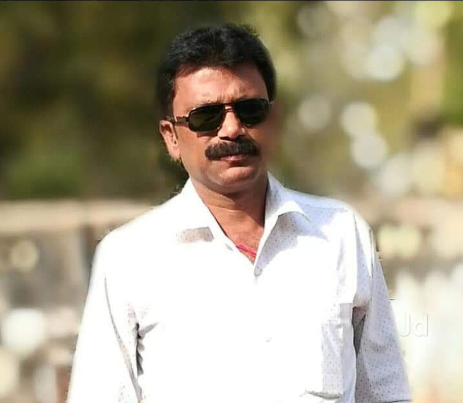
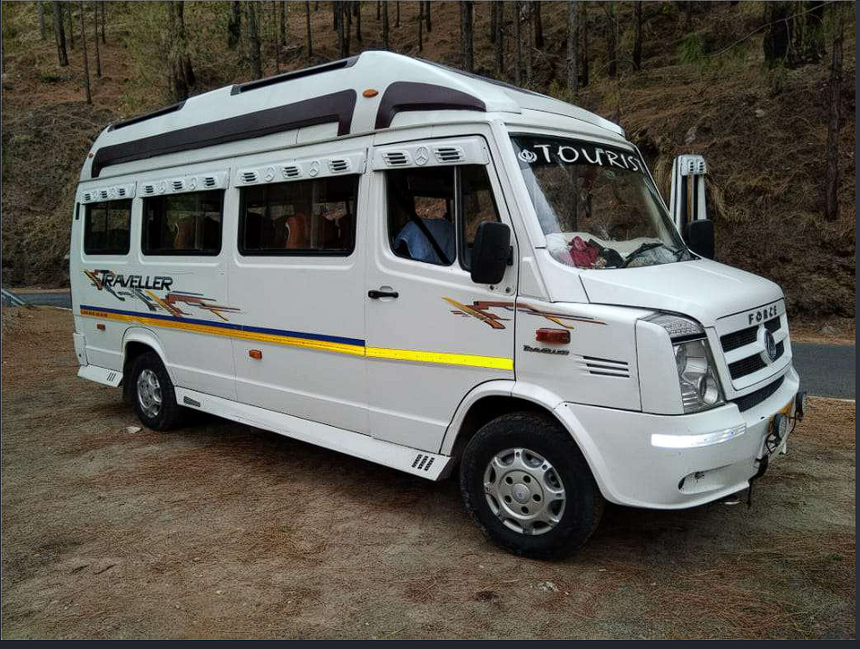
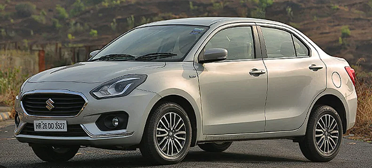
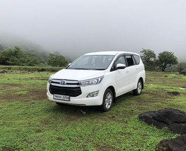
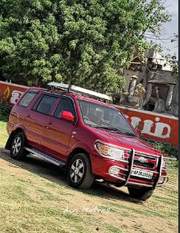
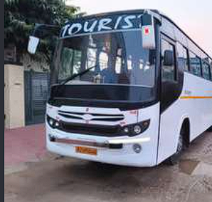

Your Faith.
Your Journey.
Our Commitment.
Discover sacred Jain Teerth destinations and travel across India with Jain Tour and Travels. Vehicle options for pilgrimage groups, family trips, wedding travel and outstation journeys.
जहाँ हर यात्रा बने आस्था, शांति और आध्यात्मिक अनुभव का संगम।
WhatsApp for Enquiry ↗Explore Jain TeerthVehicle availability, rates and itinerary are confirmed directly by phone or WhatsApp.

Travel rooted in trust. Journeys made personal.
Established in 1996, Jain Tour and Travels is based near Terapanthi Kothi main gate in Madhuban, Giridih district, Jharkhand. We help travellers plan Jain pilgrimage, family trips, group tours, wedding transport, local journeys and outstation travel.
Tell us your pickup location, destination, travel date and passenger count. We can discuss suitable vehicle options and availability with you directly.

Vinod Kumar
Owner · Jain Tour and Travels
With a vision for exceptional travel experiences, Vinod Kumar leads the agency with a commitment to quality, trust and personalized service. Dedicated to creating seamless journeys and unforgettable memories, every trip is thoughtfully planned to deliver comfort, convenience and customer satisfaction.
Choose the vehicle for your group.
Seating capacities are based on the details provided. Confirm the exact vehicle, configuration and availability when enquiring.





Discover India’s sacred Jain Teerth destinations.
जहाँ हर यात्रा बने आस्था, शांति और आध्यात्मिक अनुभव का संगम। Choose destinations and contact us to discuss a customized route.
⛰️ Jharkhand
Shikharji (Parasnath), Madhuban
🛕 Bihar
Pawapuri, Rajgir, Kundalpur, Champapuri
🙏 Uttar Pradesh
Hastinapur, Ayodhya, Varanasi, Ahichhatra
🏰 Rajasthan
Ranakpur, Dilwara Temples, Nakoda, Shri Mahavirji, Lodurva
🌄 Gujarat
Palitana, Girnar, Taranga, Mahudi, Sankheshwar
🕊️ Madhya Pradesh
Sonagiri, Kundalpur, Bawangaja, Muktagiri, Gopachal
🌿 Maharashtra
Mangi-Tungi, Ellora Jain Caves, Kunthalgiri, Gajpantha
🏛️ Karnataka
Shravanabelagola, Karkala, Moodabidri, Humcha
🌸 Tamil Nadu
Sittanavasal, Thirumalai Jain Hills, Jina Kanchi
🛕 Odisha
Udayagiri, Khandagiri, Ratnagiri
🙏 Special Jain Teerth Yatra enquiries
Shikharji Yatra · Palitana Yatra · Girnar Yatra · All-India Jain Teerth Darshan · Customized group pilgrimages
Plan a Teerth Yatra ↗Your journey begins at your doorstep.
Giridih se lekar poore India tak. Pickup and route availability is subject to prior confirmation.
📍 Giridih & nearby areas
Giridih Railway Station, Bus Stand, Madhuban, Parasnath Railway Station, Dumri, Bagodar, Bengabad, Jamua, Tisri and nearby locations.
🙏 Jain Teerth pickup
Shikharji, Madhuban, Parasnath and other pilgrimage destinations according to the agreed itinerary.
🇮🇳 All-India pickup
Major railway stations, airports, bus stands, hotels and residential locations, subject to route availability and advance booking.
Popular outstation journeys
Madhuban → Shikharji → Parasnath → Pawapuri → Rajgir → Kundalpur → Champapuri → Palitana → Girnar → Ranakpur → Dilwara Jain Temples → Shravanabelagola
Other spiritual destinations include Deoghar, Varanasi, Ayodhya, Prayagraj, Gaya, Bodh Gaya, Puri, Bhubaneswar, Kolkata, Patna and Ranchi. Customized destinations across India can be discussed.
Share pickup & destination ↗Bike se Parasnath Pahad Yatra
मधुबन से पारसनाथ पहाड़ की यात्रा के लिए बाइक सुविधा की जानकारी भी लें।
Jain Tour and Travels se Parasnath Pahad ke liye bike se chadhai / pahadi yatra ke baare mein enquiry karein. Availability, permitted route, timing, charges aur current local rules pehle phone par confirm kar lein.
Safety ke liye local guidance follow karein, helmet pehnein aur sirf allowed route par hi travel karein. Pahad par har jagah bike le jaana allowed ho, yeh assume na karein.
Bike Yatra Enquiry ↗ Call to ConfirmPlease confirm whether bike service is available on your requested date and which sections of the route permit motor vehicles.
Comfort, convenience and care — every mile.
🙏 Jain Teerth Yatra
Shikharji, Madhuban and pilgrimage destinations across India.
👨👩👧 Family trips
Vehicle options for family holidays and private journeys.
🚌 Group travel
Winger, Traveller and bus options for groups.
💐 Wedding travel
Transport enquiries for wedding events and guests.
📍 Local pickup
Giridih, Madhuban, Parasnath and nearby areas.
🛣️ Outstation & All India
Customized long-distance routes, subject to confirmation.
Let’s plan your next journey.
Contact us for Jain Teerth Yatra, vehicle availability, wedding travel, family trips and outstation journeys.
Vinod Kumar
+91 97987 75661
Madhuban near Terapanthi Kothi main gate, Giridih district, Jharkhand 825329
7:00 AM – 10:00 PM, every day
Jain Tour and Travels Madhuban ↗
Send a travel enquiry
Message your pickup, destination, date, passenger count and preferred vehicle. Rates and availability are confirmed directly.
WhatsApp trip detailsCall +91 97987 75661Directions to office ↗Informational website only: no online payment or instant booking. Please confirm route, rates and vehicle availability directly.